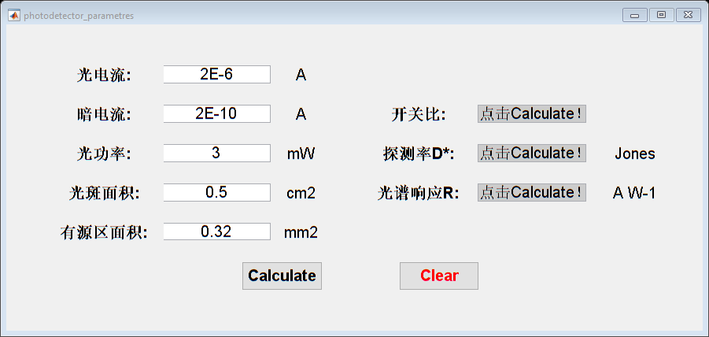

function varargout = photodetector_parametres(varargin) %PHOTODETECTOR_PARAMETRES MATLAB code file for photodetector_parametres.fig % PHOTODETECTOR_PARAMETRES, by itself, creates a new PHOTODETECTOR_PARAMETRES or raises the existing % singleton*. % % H = PHOTODETECTOR_PARAMETRES returns the handle to a new PHOTODETECTOR_PARAMETRES or the handle to % the existing singleton*. % % PHOTODETECTOR_PARAMETRES('Property','Value',...) creates a new PHOTODETECTOR_PARAMETRES using the % given property value pairs. Unrecognized properties are passed via % varargin to photodetector_parametres_OpeningFcn. This calling syntax produces a % warning when there is an existing singleton*. % % PHOTODETECTOR_PARAMETRES('CALLBACK') and PHOTODETECTOR_PARAMETRES('CALLBACK',hObject,...) call the % local function named CALLBACK in PHOTODETECTOR_PARAMETRES.M with the given input % arguments. % % *See GUI Options on GUIDE's Tools menu. Choose "GUI allows only one % instance to run (singleton)". % % See also: GUIDE, GUIDATA, GUIHANDLES % Edit the above text to modify the response to help photodetector_parametres % Last Modified by GUIDE v2.5 07-Dec-2017 10:19:29 % Begin initialization code - DO NOT EDIT gui_Singleton = 1; gui_State = struct('gui_Name', mfilename, ... 'gui_Singleton', gui_Singleton, ... 'gui_OpeningFcn', @photodetector_parametres_OpeningFcn, ... 'gui_OutputFcn', @photodetector_parametres_OutputFcn, ... 'gui_LayoutFcn', [], ... 'gui_Callback', []); if nargin && ischar(varargin{1}) gui_State.gui_Callback = str2func(varargin{1}); end if nargout [varargout{1:nargout}] = gui_mainfcn(gui_State, varargin{:}); else gui_mainfcn(gui_State, varargin{:}); end % End initialization code - DO NOT EDIT % --- Executes just before photodetector_parametres is made visible. function photodetector_parametres_OpeningFcn(hObject, eventdata, handles, varargin) % This function has no output args, see OutputFcn. % hObject handle to figure % eventdata reserved - to be defined in a future version of MATLAB % handles structure with handles and user data (see GUIDATA) % varargin unrecognized PropertyName/PropertyValue pairs from the % command line (see VARARGIN) % Choose default command line output for photodetector_parametres handles.output = hObject; % Update handles structure guidata(hObject, handles); % UIWAIT makes photodetector_parametres wait for user response (see UIRESUME) % uiwait(handles.figure1); % --- Outputs from this function are returned to the command line. function varargout = photodetector_parametres_OutputFcn(hObject, eventdata, handles) % varargout cell array for returning output args (see VARARGOUT); % hObject handle to figure % eventdata reserved - to be defined in a future version of MATLAB % handles structure with handles and user data (see GUIDATA) % Get default command line output from handles structure varargout{1} = handles.output; function photocurrent_Callback(hObject, eventdata, handles) % hObject handle to photocurrent (see GCBO) % eventdata reserved - to be defined in a future version of MATLAB % handles structure with handles and user data (see GUIDATA) input=str2double(get(hObject,'String')); %检查输入是否为空.?如果为空,则默认显示为0? if(isempty(input)) set(hObject,'String','0') end guidata(hObject,handles);%保存handles结构体 % Hints: get(hObject,'String') returns contents of photocurrent as text % str2double(get(hObject,'String')) returns contents of photocurrent as a double % --- Executes during object creation, after setting all properties. function photocurrent_CreateFcn(hObject, eventdata, handles) % hObject handle to photocurrent (see GCBO) % eventdata reserved - to be defined in a future version of MATLAB % handles empty - handles not created until after all CreateFcns called % Hint: edit controls usually have a white background on Windows. % See ISPC and COMPUTER. if ispc && isequal(get(hObject,'BackgroundColor'), get(0,'defaultUicontrolBackgroundColor')) set(hObject,'BackgroundColor','white'); end function darkcurrent_Callback(hObject, eventdata, handles) % hObject handle to darkcurrent (see GCBO) % eventdata reserved - to be defined in a future version of MATLAB % handles structure with handles and user data (see GUIDATA) input=str2double(get(hObject,'String')); %检查输入是否为空.?如果为空,则默认显示为0? if(isempty(input)) set(hObject,'String','0') end guidata(hObject,handles);%保存handles结构体 % Hints: get(hObject,'String') returns contents of darkcurrent as text % str2double(get(hObject,'String')) returns contents of darkcurrent as a double % --- Executes during object creation, after setting all properties. function darkcurrent_CreateFcn(hObject, eventdata, handles) % hObject handle to darkcurrent (see GCBO) % eventdata reserved - to be defined in a future version of MATLAB % handles empty - handles not created until after all CreateFcns called % Hint: edit controls usually have a white background on Windows. % See ISPC and COMPUTER. if ispc && isequal(get(hObject,'BackgroundColor'), get(0,'defaultUicontrolBackgroundColor')) set(hObject,'BackgroundColor','white'); end function lightPower_Callback(hObject, eventdata, handles) % hObject handle to lightPower (see GCBO) % eventdata reserved - to be defined in a future version of MATLAB % handles structure with handles and user data (see GUIDATA) input=str2double(get(hObject,'String')); %检查输入是否为空.?如果为空,则默认显示为0? if(isempty(input)) set(hObject,'String','0') end guidata(hObject,handles);%保存handles结构体 % Hints: get(hObject,'String') returns contents of lightPower as text % str2double(get(hObject,'String')) returns contents of lightPower as a double % --- Executes during object creation, after setting all properties. function lightPower_CreateFcn(hObject, eventdata, handles) % hObject handle to lightPower (see GCBO) % eventdata reserved - to be defined in a future version of MATLAB % handles empty - handles not created until after all CreateFcns called % Hint: edit controls usually have a white background on Windows. % See ISPC and COMPUTER. if ispc && isequal(get(hObject,'BackgroundColor'), get(0,'defaultUicontrolBackgroundColor')) set(hObject,'BackgroundColor','white'); end function sensitiveArea_Callback(hObject, eventdata, handles) % hObject handle to sensitiveArea (see GCBO) % eventdata reserved - to be defined in a future version of MATLAB % handles structure with handles and user data (see GUIDATA) input=str2double(get(hObject,'String')); %检查输入是否为空.?如果为空,则默认显示为0? if(isempty(input)) set(hObject,'String','0') end guidata(hObject,handles);%保存handles结构体 % Hints: get(hObject,'String') returns contents of sensitiveArea as text % str2double(get(hObject,'String')) returns contents of sensitiveArea as a double % --- Executes during object creation, after setting all properties. function sensitiveArea_CreateFcn(hObject, eventdata, handles) % hObject handle to sensitiveArea (see GCBO) % eventdata reserved - to be defined in a future version of MATLAB % handles empty - handles not created until after all CreateFcns called % Hint: edit controls usually have a white background on Windows. % See ISPC and COMPUTER. if ispc && isequal(get(hObject,'BackgroundColor'), get(0,'defaultUicontrolBackgroundColor')) set(hObject,'BackgroundColor','white'); end function lightArea_Callback(hObject, eventdata, handles) % hObject handle to lightArea (see GCBO) % eventdata reserved - to be defined in a future version of MATLAB % handles structure with handles and user data (see GUIDATA) input=str2double(get(hObject,'String')); %检查输入是否为空.?如果为空,则默认显示为0? if(isempty(input)) set(hObject,'String','0') end guidata(hObject,handles);%保存handles结构体 % Hints: get(hObject,'String') returns contents of lightArea as text % str2double(get(hObject,'String')) returns contents of lightArea as a double % --- Executes during object creation, after setting all properties. function lightArea_CreateFcn(hObject, eventdata, handles) % hObject handle to lightArea (see GCBO) % eventdata reserved - to be defined in a future version of MATLAB % handles empty - handles not created until after all CreateFcns called % Hint: edit controls usually have a white background on Windows. % See ISPC and COMPUTER. if ispc && isequal(get(hObject,'BackgroundColor'), get(0,'defaultUicontrolBackgroundColor')) set(hObject,'BackgroundColor','white'); end % --- Executes on button press in pushbutton1. function pushbutton1_Callback(hObject, eventdata, handles) % hObject handle to pushbutton1 (see GCBO) % eventdata reserved - to be defined in a future version of MATLAB % handles structure with handles and user data (see GUIDATA) %开关比 on_current=get(handles.photocurrent,'String'); off_current=get(handles.darkcurrent,'String'); power = get(handles.lightPower,'String'); area_light = get(handles.lightArea,'String'); area_sensitive= get(handles.sensitiveArea,'String'); ratio = str2double(on_current)/str2double(off_current); response_spectrum = (str2double(on_current)/str2double(area_sensitive)*100)/(str2double(power)/1000/str2double(area_light)); detectivity_star = response_spectrum/sqrt(2*1.6E-19*str2double(off_current)/str2double(area_sensitive)*100); set(handles.onoffRatio, 'string',ratio); set(handles.detectivity, 'string',detectivity_star); set(handles.response, 'string', response_spectrum); guidata(hObject,handles) % --- Executes on button press in pushbutton2. function pushbutton2_Callback(hObject, eventdata, handles) % hObject handle to pushbutton2 (see GCBO) % eventdata reserved - to be defined in a future version of MATLAB % handles structure with handles and user data (see GUIDATA) set(handles.photocurrent, 'string',0); set(handles.darkcurrent, 'string',0); set(handles.lightPower, 'string',0); set(handles.lightArea, 'string',0); set(handles.sensitiveArea, 'string',0); set(handles.onoffRatio, 'string',0); set(handles.detectivity, 'string',0); set(handles.response, 'string', 0); guidata(hObject,handles) function onoffRatio_Callback(hObject, eventdata, handles) % hObject handle to onoffRatio (see GCBO) % eventdata reserved - to be defined in a future version of MATLAB % handles structure with handles and user data (see GUIDATA) % Hints: get(hObject,'String') returns contents of onoffRatio as text % str2double(get(hObject,'String')) returns contents of onoffRatio as a double % --- Executes during object creation, after setting all properties. function onoffRatio_CreateFcn(hObject, eventdata, handles) % hObject handle to onoffRatio (see GCBO) % eventdata reserved - to be defined in a future version of MATLAB % handles empty - handles not created until after all CreateFcns called % Hint: edit controls usually have a white background on Windows. % See ISPC and COMPUTER. if ispc && isequal(get(hObject,'BackgroundColor'), get(0,'defaultUicontrolBackgroundColor')) set(hObject,'BackgroundColor','white'); end function detectivity_Callback(hObject, eventdata, handles) % hObject handle to detectivity (see GCBO) % eventdata reserved - to be defined in a future version of MATLAB % handles structure with handles and user data (see GUIDATA) % Hints: get(hObject,'String') returns contents of detectivity as text % str2double(get(hObject,'String')) returns contents of detectivity as a double % --- Executes during object creation, after setting all properties. function detectivity_CreateFcn(hObject, eventdata, handles) % hObject handle to detectivity (see GCBO) % eventdata reserved - to be defined in a future version of MATLAB % handles empty - handles not created until after all CreateFcns called % Hint: edit controls usually have a white background on Windows. % See ISPC and COMPUTER. if ispc && isequal(get(hObject,'BackgroundColor'), get(0,'defaultUicontrolBackgroundColor')) set(hObject,'BackgroundColor','white'); end function response_Callback(hObject, eventdata, handles) % hObject handle to response (see GCBO) % eventdata reserved - to be defined in a future version of MATLAB % handles structure with handles and user data (see GUIDATA) % Hints: get(hObject,'String') returns contents of response as text % str2double(get(hObject,'String')) returns contents of response as a double % --- Executes during object creation, after setting all properties. function response_CreateFcn(hObject, eventdata, handles) % hObject handle to response (see GCBO) % eventdata reserved - to be defined in a future version of MATLAB % handles empty - handles not created until after all CreateFcns called % Hint: edit controls usually have a white background on Windows. % See ISPC and COMPUTER. if ispc && isequal(get(hObject,'BackgroundColor'), get(0,'defaultUicontrolBackgroundColor')) set(hObject,'BackgroundColor','white'); end